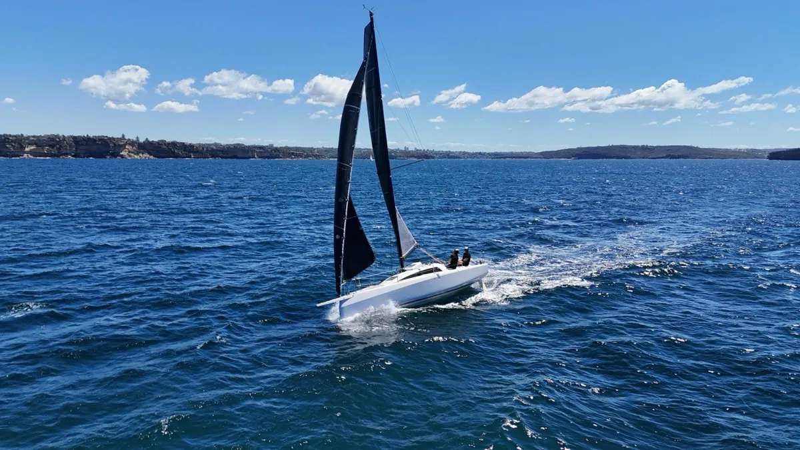

Hi, I'm Annie. Here's the rest of it.
@_annie_sails on Instagram →
8,300+ followers and growing
Platform engineering, mostly.
I'm a Lead Platform Engineer at Mantel. The actual work is the kind of thing that's hard to describe at parties: infrastructure as code, pipelines, shift left, networking. But in short, I'm responsible for designing and building the infrastructure other engineers work on.
I'm 27. I learnt to code at university and never quite shook the habit. I like understanding the reasons behind decisions, seeing things through from design to operation, and the part of engineering that involves understanding the problem before trying to solve it.
It turns out that mindset translates directly to offshore racing. Systems thinking, preparation, staying calm when things go sideways at 3am - the skills are the same, the environment just moves a lot more.

How I ended up offshore.
I first started sailing at school, but reservoir sailing in Yorkshire gets bleak and cold pretty quickly. I got onto bigger boats through cruising, and committed to the racing scene from there.
I started inshore, winning state level regattas. Then ocean races as crew, placing in the top three in major Australia offshore races. Then more responsibility. And eventually the realisation that what I actually wanted was to make decisions on my own.
That's what led me to double-handed. Two people. One boat. Everything is on you. This season I'm racing with Peter Winter, who I've raced with since 2023 - he's a great sailor and I'm looking forward to seeing what we can achieve together.

Out there talking about it too.
When I'm not on a boat or behind a keyboard, I'm occasionally on a panel or in front of a camera - usually talking about engineering, systems thinking, or how those things translate into the sporting world.
As you might have realised, I enjoy a good chat and am always open to sharing my story and what I've learnt along the way!
Get in touch →
A few more from the camera roll.